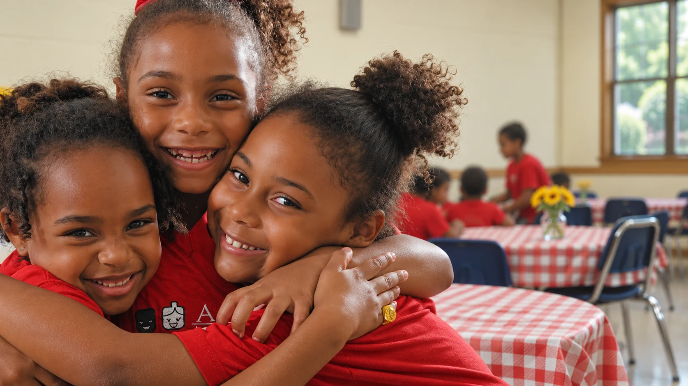

Um gesto de carinho pode fazer parte de muitas histórias.

Cuidar transforma futuros
Transforme cuidado
em oportunidades
reais.
- Desde 2010
- Atendimento gratuito
- Transparência
Opção 1 de 3
Nossos serviços
O que fazemos
Veja alguns dos contextos em que presença, escuta e atividades ganham forma.
Serviço de Convivência e Fortalecimento de Vínculos
Arte, esporte e convivência para desenvolver talentos e aproximar famílias.
Fisioterapia gratuita
Atendimento fisioterapêutico gratuito para toda a comunidade.
Casa de Atenção à Pessoa Idosa
Cuidado, autonomia e convivência para pessoas idosas e suas famílias.
Sala de informática
Um espaço de inclusão digital para ampliar conhecimentos e possibilidades.
Campanhas solidárias
Mobilização da comunidade em ações como o Natal Solidário e o apoio ao Rio Grande do Sul.
Oficinas e oportunidades
Atividades culturais e grupos de mulheres que incentivam a participação e a geração de renda.
Impacto concreto
Veja como seu gesto pode apoiar
Conheça algumas das ações que a sua contribuição ajuda a manter.
Selecione um valor
R$ 45
Valores ilustrativos, sem equivalência fixa. A aplicação considera as necessidades das ações.
Materiais de oficinas
Arte, expressão e novas descobertas no dia a dia.
Alimentação nas atividades
Cuidado que também está à mesa, nos momentos de convivência.
Fisioterapia
Apoio à continuidade do atendimento gratuito à comunidade.
Convivência e atenção
Encontros que fortalecem os vínculos e o pertencimento.
2010O começo da nossa história
GratuitoAtendimento à comunidade
Juiz de ForaPresença e cuidado em Minas
ODSCompromisso com o futuro
Por que confiar
Confiança também se constrói em comunidade
Desde 2010, construindo caminhos de cuidado, participação e acolhimento.
Um cuidado que ganha força
Em 2018, a AACI foi contemplada pelo Criança Esperança, da TV Globo, para dar continuidade às suas ações.
Criança Esperança · 2018Mais possibilidades para aprender
O incentivo da Becton Dickinson, em 2021, permitiu a criação da sala de informática da instituição.
Incentivo internacional · 2021Prestação de contas
Transparência
Acompanhe as parcerias e a prestação de contas no site oficial.
Relatório SCFV 2025
Convivência e fortalecimento de vínculos.
Ver documento (abre PDF em nova aba)Despesas e recursos
Recursos próprios nas parcerias com a PJF.
Ver documento (abre PDF em nova aba)Cuidado à pessoa idosa
Espaço de Cuidados · Termo 05.2022.046.
Ver documento (abre PDF em nova aba)Cozinha Comunitária
Parceria · Termo 05.2023.186.
Ver documento (abre PDF em nova aba)Acompanhe de perto
Notícias e vídeos em destaque
Histórias, iniciativas e registros para você conhecer melhor a atuação da AACI.
Notícia
Natal Solidário AACI 2024
Uma campanha de mobilização e cuidado.
Ver destaque (abre em nova aba)Vídeo
Sala de Fisioterapia da AACI é pauta no MGTV
O trabalho da AACI na imprensa.
Ver destaque (abre em nova aba)Vídeo
Casa de Atenção à Pessoa Idosa
Conheça mais sobre esta iniciativa.
Ver destaque (abre em nova aba)Vídeo
Solidariedade com o Rio Grande do Sul
Uma corrente de apoio para quem precisa.
Ver destaque (abre em nova aba)Participe
Outras formas de ajudar
Dúvidas comuns
Perguntas frequentes sobre doação
As contribuições ajudam a manter as atividades e a estrutura da AACI, incluindo oficinas, convivência e fisioterapia gratuita. Você pode acompanhar as parcerias na nossa prestação de contas.
A chave Pix publicada pela AACI é o CNPJ 11.550.709/0001-87. ou acesse a página oficial de doações (abre em nova aba).
Sim. A página oficial informa: Banco Bradesco, agência 2868-1, conta 0010212-1. Para combinar outra forma de contribuir, fale com a equipe pelo WhatsApp (32) 98855-9201 (abre em nova aba).
Envie uma mensagem para aacisocial@hotmail.com e conte como gostaria de participar. A equipe poderá orientar você sobre as possibilidades de voluntariado.
Entre em contato pelo WhatsApp (32) 98855-9201 (abre em nova aba) ou pelo e-mail aaci-@hotmail.com. Os mesmos canais estão disponíveis no site oficial.